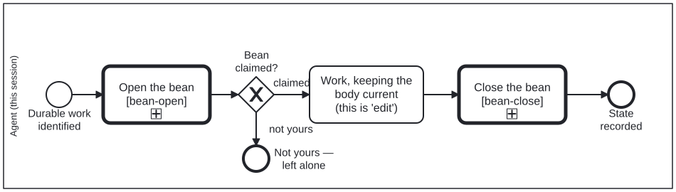

Generated from
cat-harness/processes/sdlc/bean-lifecycle.bpmnbygen-processes-viz.ts— do not edit here. All processes
Process_BeanLifecycle · strict · 8 step(s)
The whole life of a work-plan item, and the rules that make one agent’s bean legible to another: check before you create, claim before you work, keep the body current as you go, and end it in a state that says why.
You are in this process the moment durable work is identified — which is before the first tool call, not after the work is done. The second lane exists because a bean you did not open is not yours to close: coordination replaces a decision you are not entitled to make.
The one irreversible thing is refused outright. Unwanted work is SCRAPPED with its reasons, never deleted, because a scrapped bean stops the next agent re-entering a dead end while a deleted one leaves a sibling unable to tell abandonment from accident.

| lane | role | what it does here |
|---|---|---|
| Agent (this session) | authoring-agent |
Owns every transition on a bean it holds — check, create, claim, work, and the three-way outcome at the end — but GW_Owner is the one branch this lane cannot complete itself: the moment a bean turns out to be someone else’s, the only correct move is to leave the whole lifecycle to Lane_Sibling rather than resolve, scrap or edit it from here. |
| Sibling session or human (not yours to close) | sibling-session |
The only task in this diagram with no cat-harness.processes:bean op at all — every other terminal action here writes something, and this one’s entire job is to write nothing to a bean it does not own, ending the lifecycle at End_NotYours rather than at the completion Lane_Agent reaches for its own beans. |
Every one of the 8 step(s) is documented.
| step | lane | skill / sub-process | what it does |
|---|---|---|---|
Check before you create (exact-title search)Task_CheckExists |
Agent (this session) | todo-manager |
STRICT. beans create is not idempotent: it mints afresh id every call and dedupes on nothing, so re-entering a step duplicates the plan instead of no-op’ing. In the qou folio an unguarded re-run produced 14,688 duplicate beans — 92% of every open bean — which starved the idle-backlog policy of signal and collided with 15 real ids. |
Create the bean (agent CLI, not an engine op)Task_Create |
Agent (this session) | todo-manager |
beans create "<title>". This is the AGENT’s call.The workflow engine has no create op — its vocabulary is claim, note andresolve, all of which act on an instance’s existing bean. |
Leave it alone (coordinate instead)Task_LeaveAlone |
Sibling session or human (not yours to close) | bean-coordination |
Never resolve, scrap or delete a bean another session or a human owns. Claiming is how two sessions avoid picking the same item; closing someone else’s is how one of them loses work it had not finished reporting. |
Claim it (status: in-progress)Task_Claim |
Agent (this session) | bean-coordination |
Idempotent. Claim BEFORE working, and note the branch, so a sibling session can see the item is taken rather than discovering it by collision. |
Work, keeping the body current (this is ‘edit’)Task_Work |
Agent (this session) | todo-manager |
Editing a bean is not a separate ceremony: check off todo items as they happen, append measurements with the command and date that produced them, and record what you now know that the next agent does not. A bean whose body is a title is a placeholder, not a plan. |
Complete (no unchecked todos left)Task_Complete |
Agent (this session) | todo-manager |
Only once nothing is unchecked, and with a summary of what changed. The engine’s resolve completes a bean only after the instanceitself has completed — whether work is done is a judgement, and a bean is not closed on someone else’s say-so. |
Scrap with reasons NEVER deleteTask_Scrap |
Agent (this session) | todo-manager |
status: scrapped, plus a “Reasons for Scrapping”section. This is what “disable” means here — the CLI has no disabled state; its vocabulary is draft, todo, in-progress, completed, scrapped. DELETION IS NEVER THE ANSWER, even though beans delete exists. A scrappedbean records that the work was considered and rejected, and why; a deleted one leaves a sibling session unable to tell abandonment from accident, and leaves the next agent free to re-open the same dead end. |
Record the blocker and hand backTask_RecordBlocker |
Agent (this session) | bean-coordination |
Blocked is not scrapped. Set --blocked-by, say in thebody what would unblock it, and return it to todo so it is visible to whoevercan act. An in-progress bean nobody is progressing reads as active work. |
Every one of the 3 decision(s) is documented.
| decision | what decides it | branches |
|---|---|---|
Already exists?GW_Exists |
Answered by the exact-title check before it (todo-manager §’Check before you create’): beans list --json --search followed by an exact comparison of titles, since --search is fuzzy. no (0 exact matches) creates the bean. yes (1 or more) does not create a second one — beans create mints a fresh id every call and dedupes on nothing — and asks whose the existing bean is. |
no → Create the bean (agent CLI, not an engine op) yes → Whose bean? |
Whose bean?GW_Owner |
Answered from the existing bean and its surroundings (bean-coordination). someone else's means a sibling is mid-flight on it: a claim naming a branch, a recent note, or an open PR. That bean is left alone and the lifecycle ends here. mine / unclaimed claims it. A claim is branch-local, so check the bean’s status on origin/main and the open PRs naming it, not only the copy on your branch. |
someone else’s → Leave it alone (coordinate instead) mine / unclaimed → Claim it (status: in-progress) |
Outcome?GW_Outcome |
The performer’s judgement on the work, and one of three recorded endings. done: complete it only when no todo is unchecked, with a summary of what changed. not wanted: set it scrapped with a ‘Reasons for Scrapping’ section — never delete. blocked: record what it waits on with --blocked-by, say what would unblock it, and return it to todo, because an in-progress bean nobody is progressing reads as active work. |
done → Complete (no unchecked todos left) not wanted → Scrap with reasons NEVER delete blocked → Record the blocker and hand back |